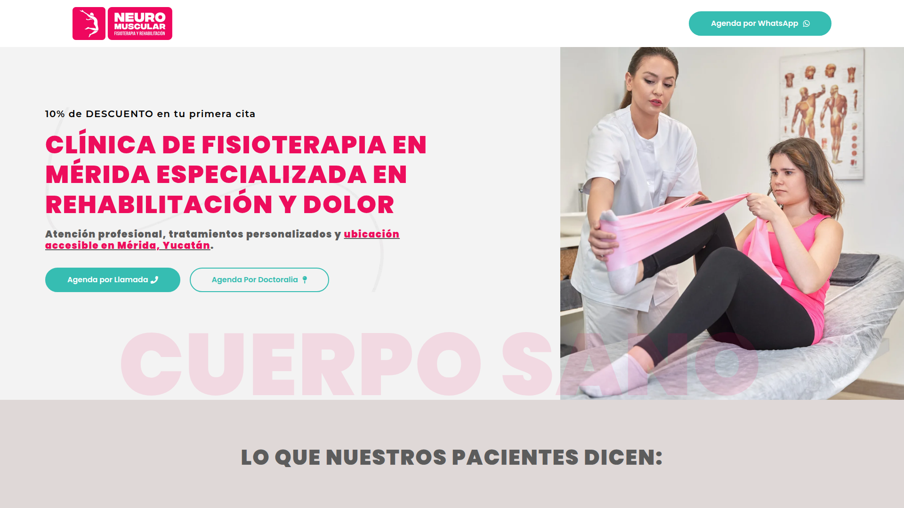

§ 01 — UI/UX · web · healthcare
Neuromuscular MID
A warm, clear, trustworthy digital experience for a physiotherapy clinic in Mérida — focused on appointment booking and service clarity.
Live site · neuromuscularmid.com
Appointment booking
Healthcare · physiotherapy

A concept that cares.
The pixelated heart was born to bridge two worlds: the clinical rigour of physiotherapy and the warmth a patient needs to feel on arrival.
Architecture to understand.
A landing that prioritises clarity: services, team, and how to book — without forcing the patient to search.
In healthcare, what decides isn't the effect — it's whether the patient understands and books without friction.
— Clinical UX criterionNeuromuscular MID · 2025
Up next: the live site — how the booking flow was built and why it feels warm.
Booking as the primary action.
1
Site · neuromuscularmid.com
Booking
Primary action
Warm
Visual tone
Mérida
Physio clinic
Deliverables
- LandingSite at neuromuscularmid.com with services, team and booking.
- Visual conceptPixelated heart motif as a clinical-human bridge.
- Booking flowPrimary action built to reduce friction for the patient.
- Clinical communicationSocial pieces under the site's visual system.
- ResponsiveFull adaptation across mobile, tablet and desktop.
A live site.
A live site at neuromuscularmid.com: clinical clarity, human warmth and a booking flow that reduces friction for the patient.
ClientNeuromuscular MID
IndustryHealthcare · physiotherapy
RoleLead UI/UX & Web designer
AgencyIntuitiva · Mérida
Year2025
Siteneuromuscularmid.com
← Previous projectLos Pollos GirosIdentity · food & beverage
Next project →Alfa ComunicacionesIdentity · telecommunications
© 2026 Julio Morcillo — All rights reserved.Designed and built in Mérida, MX.